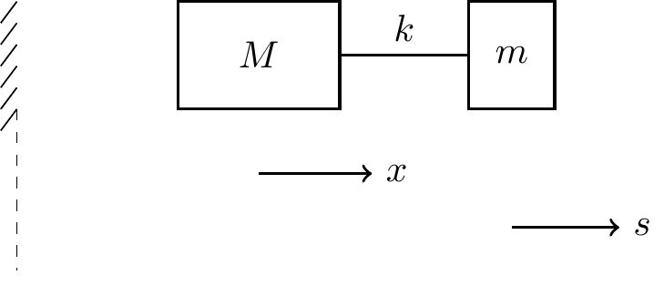

24 Applications of Lagrange’s Equations
This lecture works through multi-DOF examples, introduces cyclic coordinates and their conservation laws, and shows how to handle nonconservative forces such as damping.
24.1 Worked Example: Spring-Mass System on a Cart
A cart of mass \(M\) slides horizontally without friction and carries a mass \(m\) connected to it by a spring of stiffness \(k\) and natural length \(\ell_0\), constrained to move only horizontally relative to the cart. Let \(q_1=x\) (cart position) and \(q_2=s\) (stretch of the spring, i.e., mass position relative to the cart is \(x+s\)).
Positions: \({\bf r}_M = x\,{\bf E}_x\), \({\bf r}_m=(x+s)\,{\bf E}_x\). Velocities: \(\dot{\bf r}_M=\dot x\,{\bf E}_x\), \(\dot{\bf r}_m=(\dot x+\dot s)\,{\bf E}_x\). The kinetic and potential energies are \[\begin{align} T = \tfrac12 M\dot x^2+\tfrac12 m(\dot x+\dot s)^2, \qquad U=\tfrac12 k s^2. \end{align}\] Lagrangian \(L=T-U\). For \(q_1=x\): \[\begin{align} \frac{\partial L}{\partial\dot x} = M\dot x+m(\dot x+\dot s), \qquad \frac{\partial L}{\partial x} = 0 \implies \frac{d}{dt}\leb M\dot x+m(\dot x+\dot s)\reb = 0. \end{align}\] This is simply conservation of total horizontal momentum — no external horizontal force acts on the system, so \(x\) is a cyclic coordinate (see below). For \(q_2=s\): \[\begin{align} \frac{\partial L}{\partial\dot s} = m(\dot x+\dot s), \qquad \frac{\partial L}{\partial s}=-ks \implies m(\ddot x+\ddot s)+ks = 0. \end{align}\] Two coupled equations, obtained without ever introducing the (unknown, and ultimately irrelevant) normal force between cart and ground or the internal force in the spring’s guide rail.
24.2 Cyclic Coordinates and Conservation
If the Lagrangian does not depend explicitly on a coordinate \(q_j\) (i.e., \(\partial L/\partial q_j=0\)), that coordinate is called cyclic (or ignorable). Lagrange’s equation for it reduces to \[\begin{align} \frac{d}{dt}\lp\frac{\partial L}{\partial\dot q_j}\rp = 0 \implies p_j\equiv\frac{\partial L}{\partial\dot q_j} = \text{const}. \end{align}\] The quantity \(p_j\) is the generalized momentum conjugate to \(q_j\). In the example above, \(x\) was cyclic and \(p_x=M\dot x+m(\dot x+\dot s)\) — the total linear momentum — was conserved. If a generalized coordinate is an angle \(\phi\) about which the system is symmetric, its conjugate momentum is an angular momentum, conserved for the same reason. Recognizing cyclic coordinates is often the fastest route to a first integral of the motion, before ever writing the full equations of motion.
24.3 Worked Example: Bead on a Rotating Rod
A bead of mass \(m\) slides without friction along a straight rigid rod that is forced to rotate in a horizontal plane at constant angular rate \(\Omega\) (a motor enforces \(\theta=\Omega t\) exactly; this is a time-dependent, rheonomic constraint). Let \(q_1=r\), the bead’s distance from the pivot, be the only generalized coordinate (\(n=1\); \(\theta\) is prescribed, not free).
Position: \({\bf r}=r\,{\bf e}_r\) with \(\dot\theta=\Omega\). Velocity in polar coordinates: \({\bf v}=\dot r\,{\bf e}_r+r\Omega\,{\bf e}_\theta\), so \[\begin{align} T = \tfrac12 m\lp\dot r^2+r^2\Omega^2\rp. \end{align}\] There is no potential energy change (motion is horizontal) and the rod’s normal force on the bead does no work (perpendicular to \({\bf e}_r\)), so \(U=0\), \(Q_r^{\text{nc}}=0\), and \(L=T\). Then \[\begin{align} \frac{\partial L}{\partial\dot r}=m\dot r, \qquad \frac{\partial L}{\partial r}=mr\Omega^2 \implies \ddot r-\Omega^2 r = 0. \end{align}\] The bead accelerates outward exponentially — this is the familiar centrifugal effect, recovered here purely from differentiating \(T=\tfrac12 m\dot r^2+\tfrac12 mr^2\Omega^2\); the \(\tfrac12 mr^2\Omega^2\) term behaves like an inverted potential well, \(-\partial(-\tfrac12 mr^2\Omega^2)/\partial r\), which is exactly the centrifugal “force” \(mr\Omega^2\).
24.4 Nonconservative Generalized Forces: Damping
Suppose a linear dashpot with damping coefficient \(c\) acts on generalized coordinate \(q_j\), exerting a force \(-c\dot q_j\) opposing its motion. This force is nonconservative (it depends on velocity, not position) and does not fit into \(U\). Its contribution to \(Q_j^{\text{nc}}\) is found directly from virtual work, \(\delta W = (-c\dot q_j)\,\delta q_j\), so \(Q_j^{\text{nc}}=-c\dot q_j\), and it is appended to the right-hand side of Lagrange’s equation for that coordinate.
A convenient bookkeeping device for several dashpots is the Rayleigh dissipation function \[\begin{align} \mathcal{F} = \tfrac12\sum_j c_j\dot q_j^2, \end{align}\] from which \(Q_j^{\text{nc}} = -\partial\mathcal{F}/\partial\dot q_j\), and Lagrange’s equations become \[\begin{align} \frac{d}{dt}\lp\frac{\partial L}{\partial\dot q_j}\rp-\frac{\partial L}{\partial q_j}+\frac{\partial \mathcal{F}}{\partial \dot q_j} = 0. \end{align}\]
24.4.1 Damped Pendulum
Adding a rotational dashpot of coefficient \(c\) at the pivot of the simple pendulum from the previous lecture: \(\mathcal{F}=\tfrac12 c\dot\theta^2\), so \(Q_\theta^{\text{nc}}=-c\dot\theta\), giving \[\begin{align} m\ell^2\ddot\theta+c\dot\theta+mg\ell\sin\theta = 0. \end{align}\]
24.5 Worked Example: Double Pendulum
Returning to the double pendulum of Lecture 38 (\(q_1=\theta_1\), \(q_2=\theta_2\), masses \(m_1,m_2\), rod lengths \(\ell_1,\ell_2\)), the velocities are found by differentiating \({\bf r}_1,{\bf r}_2\): \[\begin{align} {\bf v}_1 &= \ell_1\dot\theta_1\cos\theta_1{\bf E}_x+\ell_1\dot\theta_1\sin\theta_1{\bf E}_y,\\ {\bf v}_2 &= {\bf v}_1+\ell_2\dot\theta_2\cos\theta_2{\bf E}_x+\ell_2\dot\theta_2\sin\theta_2{\bf E}_y. \end{align}\] After expanding \({\bf v}_2\cdot{\bf v}_2\) and using \(\cos\theta_1\cos\theta_2+\sin\theta_1\sin\theta_2=\cos(\theta_1-\theta_2)\): \[\begin{align} T &= \tfrac12 m_1\ell_1^2\dot\theta_1^2+\tfrac12 m_2\leb\ell_1^2\dot\theta_1^2+\ell_2^2\dot\theta_2^2+2\ell_1\ell_2\dot\theta_1\dot\theta_2\cos(\theta_1-\theta_2)\reb,\\ U &= -(m_1+m_2)g\ell_1\cos\theta_1-m_2g\ell_2\cos\theta_2. \end{align}\] This \(T\) contains a coupling term in \(\dot\theta_1\dot\theta_2\) — impossible to avoid physically (the motion of rod 2’s mass is tied to rod 1) but completely routine to differentiate. Forming \(L=T-U\) and applying Lagrange’s equation to \(\theta_1\) and \(\theta_2\) in turn produces two coupled, nonlinear, second-order ODEs. Deriving these same two equations by Newton–Euler methods requires four scalar equations (two per body) plus elimination of the unknown internal pin force between the rods — the Lagrangian approach needs none of that elimination step.
NoteNote
Writing out the full double-pendulum equations of motion explicitly is a standard homework exercise; the point of working through \(T\) and \(U\) here is the pattern: every additional rigid link adds one generalized coordinate and one coupling term in \(T\), but never requires a new free-body diagram.
24.6 Comparing the Three Lectures
Lecture 38 built the kinematic and virtual-work machinery: generalized coordinates, virtual displacements, generalized forces. Lecture 39 combined this with D’Alembert’s principle to derive Lagrange’s equations and specialized them to the Lagrangian \(L=T-U\) for conservative systems. This lecture applied the method to multi-DOF systems, showed how cyclic coordinates give conserved momenta “for free,” and extended the framework to nonconservative forces via \(Q_j^{\text{nc}}\) or the Rayleigh dissipation function.
24.7 Summary
For a system with generalized coordinates \(q_1,\dots,q_n\): \[\begin{align} \frac{d}{dt}\lp\frac{\partial L}{\partial\dot q_j}\rp-\frac{\partial L}{\partial q_j} = Q_j^{\text{nc}}, \qquad L=T-U. \end{align}\] If \(q_j\) is cyclic (\(\partial L/\partial q_j=0\)), its conjugate momentum \(p_j=\partial L/\partial\dot q_j\) is conserved. Linear damping is handled either as a direct generalized force \(Q_j^{\text{nc}}=-c\dot q_j\) or via the Rayleigh dissipation function \(\mathcal{F}=\tfrac12\sum_j c_j\dot q_j^2\), with \(Q_j^{\text{nc}}=-\partial\mathcal{F}/\partial\dot q_j\).